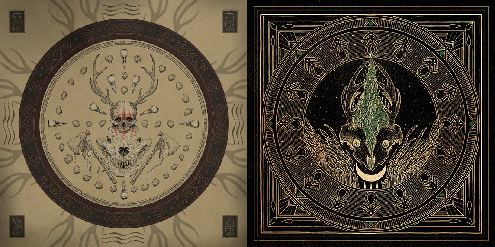

14 août 2024
J'ai trouvé Blackbraid en cherchant de nouveaux groupes à écouter sur plusieurs sites web. Et qu'est-ce que je suis content de cette découverte : ça faisait plusieurs mois que je n'avais pas trouvé un groupe de Black Metal qui m'intéresse autant. Et en plus c'est du Black Metal atmosphérique, un genre que j'adore ! C'est un groupe américain des monts Adirondacks, dans l'État de New York, composé d’une seule personne: Sgah'gahsowáh. Son nom, prononcé “SKA-Gah-SoW-Ah” est un nom mohawk (un peuple autochtone de l’Amérique du Nord) qui signifie “the witch hawk” (l'épervier ou faucon sorcier). Les chansons de ce groupe ont pour thème la mythologie amérindienne et la nature.
Blackbraid I et Blackbraid II

Ce groupe s'est formé en 2022 et nous a déjà livré deux superbes albums. Lorsque je les ai écoutés, ça été le coup de foudre immédiat. Dès les premières chansons, j'ai tout de suite reconnu le genre de musique que j'aime. Je me suis d'ailleurs empressé d'aller acheter les deux albums en CD sur le site officiel. Blackbraid nous offre un mélange entre une musique mélodique et rapide avec des blast beats ultra satisfaisants. Il y a une bonne répartition entre des musiques aggressives et d'autres plus calmes. L'ambiance dégagée par les albums est très réussie. On s'imagine dans une forêt en train de contempler la nature ou bien de participer à des rituels. Cette impression est accentuée par les chansons instrumentales. Ma chanson préférée est "The Wolf That Guides the Hunters Hand" du deuxième album. La batterie est tellement percutente qu'elle me fait penser à du Goregrind. C'est une chanson à la fois mélodique et très aggressive, ce que j'aime beaucoup. Elle est extrêmement satisfaisante à écouter.